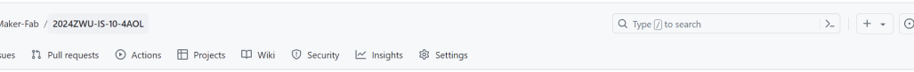
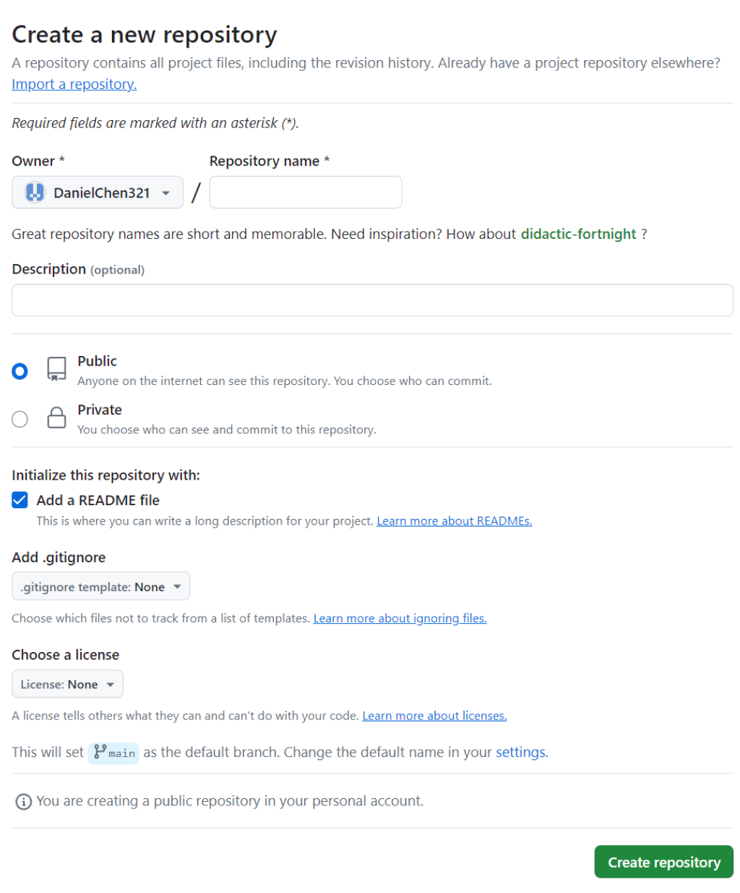
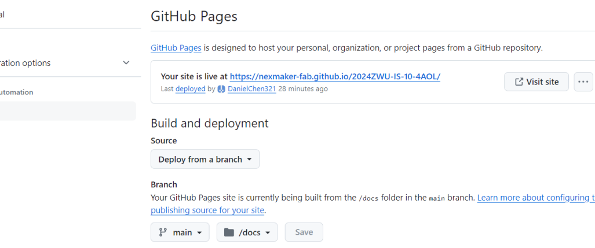
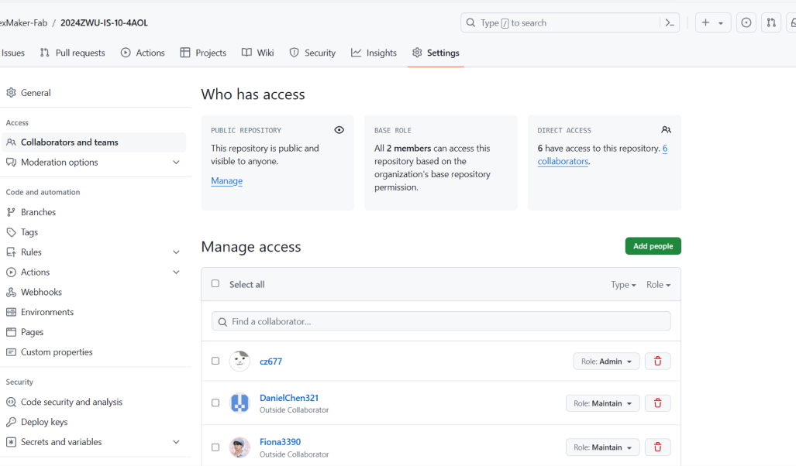
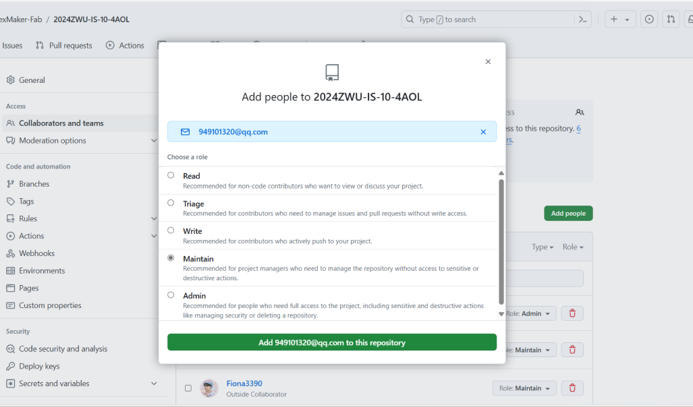
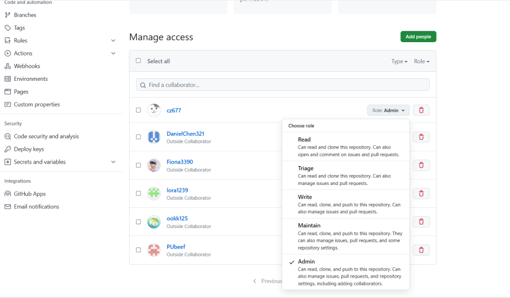
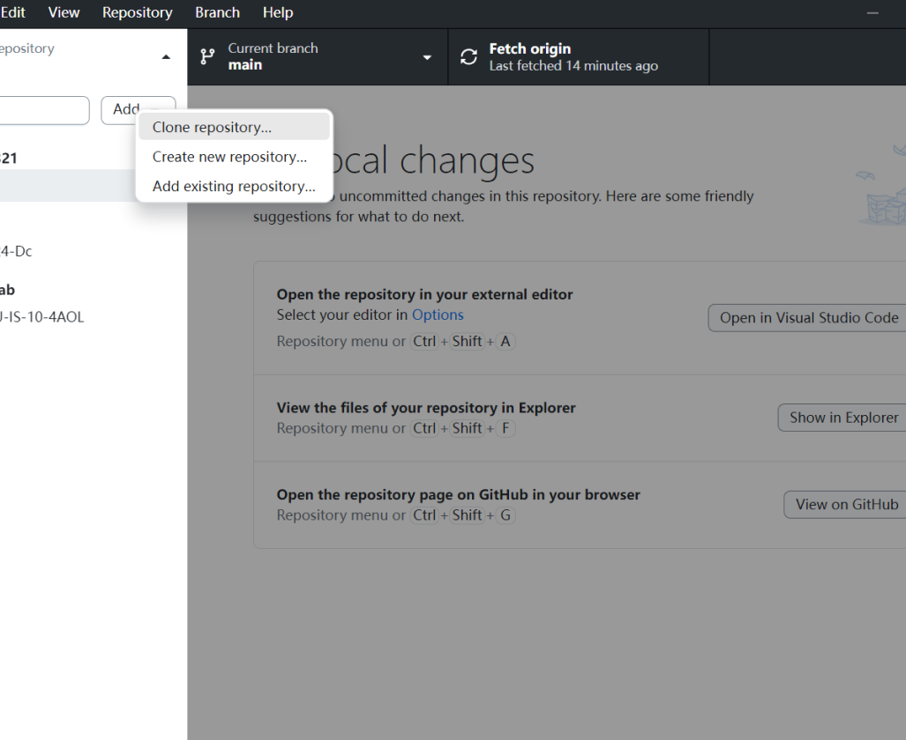
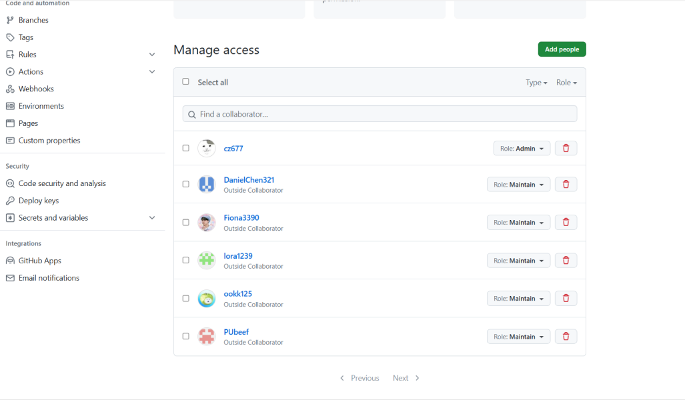
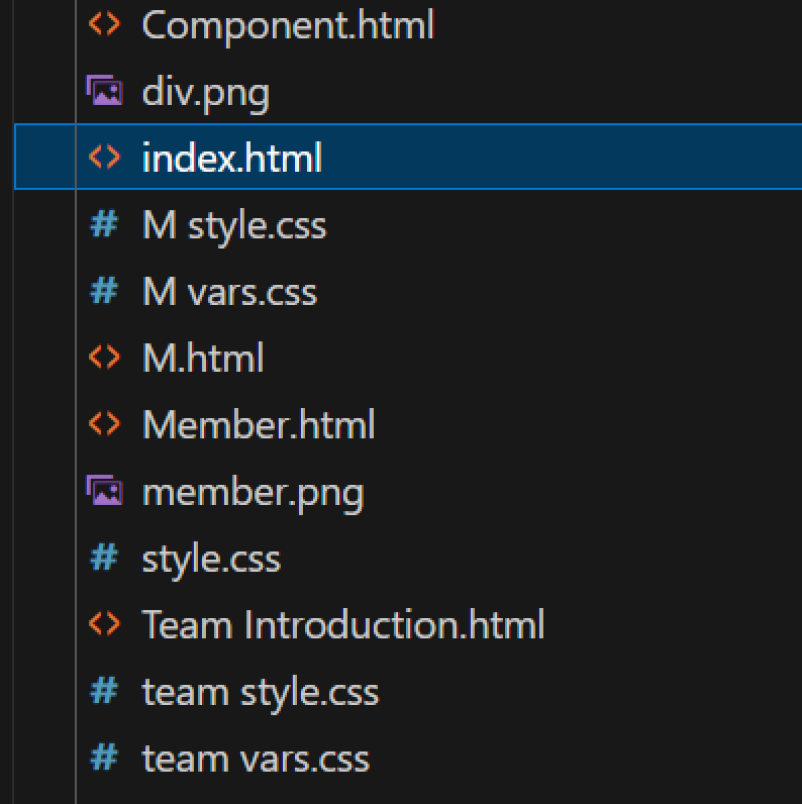

How to Build the Website
Step 1: TOOLS NEEDED
Installing all the tools necessary for the webpage build:
Git: Gitlab control
Github: Webpage server
Github desktop: To push or pull from the github server and to the github
server
VScode: For writing our documents and code for the website and its pages
HTML Language: to write the website
CSS: Corresponds with html. Used to style the website
Step 2: PAGE SETUP
Before we begin, it is worth noting that the GitHub repository had
already been setup for our team website by our supervisor. It enables us
to upload our website pages to a server for us to edit as team and also
setup for others to open and view the work we have done during the
course of the module.
Repository Setup for Nexmaker:


Repository Directory


We would like to illustrate how to setup a repository the instructions are
as follows: First sign up and create a repository on github.com. Make it
public in order to grant access for others to modify. Add a README file for
the purpose of writing the website description.
Got to repository settings, in the settings sidebar, select ‘Pages’. In
GitHub pages under branch, select main and the ‘/root’ and save. Since the
‘/docs’ folder has not been installed yet, you select root. The setting will
be changed to ‘/docs’ later after Docsify install.
Inviting a Team or Person:
1. Request the username of the person you wish to invite as a collaborator.
2. Access the primary repository page by selecting the repository name on
your GitHub dashboard.
3. Click on "Settings" under your repository name. If the
"Settings" tab isn't visible, access it through the dropdown
menu.
4. Within the sidebar's "Access" section, choose
"Collaborators and teams."
5. Click on "Add people or Add teams" to the right of "Manage
access."
6. Initiate a search by entering the name of the team or person. GitHub may
auto-suggest usernames; select the correct match.
7. Under "Choose a role," pick the repository role for the team or
person, then select "Add NAME to REPOSITORY."


Removing Access:
Step 1: Navigate to the main repository page.
Step 2: Click on "Settings" under your repository name. If the
"Settings" tab isn't visible, access it through the
dropdown menu.
Step 3: In the sidebar's "Access" section, go to
"Collaborators & teams."
Step 4: Within "Manage access," click "Remove" next
to the team or person to revoke their access.
Note: Confirm the action if prompted.
Changing Permissions:
Step 1: Go to the main repository page.
Step 2: Click on "Settings" under your repository name. If the
"Settings" tab isn't visible, access it through the
dropdown menu.
Step 3: In the sidebar's "Access" section, go to
"Collaborators & teams."
Step 4: Within "Manage access," adjust the role by selecting a
new role.


In our website one member is the admin and other members have the maintain
role.

Step 3: LOCAL SETUP
1. Github Desktop
Install Github desktop and sync your account. Clone your repository
created earlier and open in Vs Code.

2. Vs Code
Local settings Open Github desktop, clone repository created earlier and
open it in Visual Studio Code.
Example:
Setting index.html
To set an index.html file, follow these simple steps:
1. Create a new folder on your computer where you want to store your
website files.
2. Open a text editor (such as Notepad or VsCode) and create a new file.
3. Save the file with the name "index.html" in the folder you
created earlier. Make sure to save it with the ".html"
extension.
This is an example of how files and folders are organized in VScode.

4. Open the index.html file in your text editor.
5. Start by adding the basic structure of an HTML document by typing
this code at the top of the file.
< !DOCTYPE html >
6. Below the doctype declaration, add an opening and closing
"html" tag:
< html>< /html >
7. Inside the "html" tags, add opening and closing
"head" tags:
< head>< /head>
8. Within the "head" tags, you can add various elements such
as a title for your webpage using the "title" tag:
< title>Your Website Title< /title>
9. After closing the "head" tags, add opening and closing
"body" tags:
< body>< /body>
10. Inside the "body" tags, you can start adding content to
your webpage such as headings, paragraphs, images, links, etc.
For example:

Headings:
Use the < h1 > to < h6 > tags for headings. The lower the
number, the larger the heading.
<h1>This is a Heading 1</h1>
<h2>This is a Heading 2</h2>
<!-- ... -- >
<h6>This is a Heading 6</h6>
Lists:
Create ordered (numbered) and unordered (bulleted) lists using <
ol> and < ul> along with < li> for list items.
<ul>
<li>Item 1</li>
<li>Item 2</li>
<li>Item 3</li>
</ul>
<ol>
<li>First item</li>
<li>Second item</li>
<li>Third item</li>
</ol>
Links:
Use the < a > tag to create hyperlinks.
<a href="https://www.example.com">Visit
Example.com</a>
Add Text:
Inside the <body> tag, you can add text using the <p>
(paragraph) tag.
<p>This is a paragraph of text on my web page.</p>
Add Images:
To add images, use the <img> tag. Specify the src attribute with
the path to your image.
<img src="path/to/your/image.jpg" alt="Description of
the image">
Divs and Spans:
Use <div> for block-level containers and <span> for inline
containers. These are often used for grouping and styling purposes.
<div style="color: blue;">This is a blue block of
text.</div>
<p>This is a <span style="font-weight:
bold;">bold</span> word in a paragraph.</p>
Save and View:
Save your HTML file and open it in a web browser to see your web page.
Right-click on the file and select "Open with" to choose your
preferred browser.
Now you have successfully set up an index.html file! You can open it in
a web browser to see how it looks or continue adding more content and
styling to build your website further.
for more information
Write document and save all under VScode
Push to Github
1. Click on the "Clone a repository" button or go to File >
Clone Repository.
2. Select the repository you want to work with from the list or enter
its URL.
3. Choose a local path where you want to clone the repository on your
computer.
4. Click on the "Clone" button to download a copy of the
repository to your local machine.
5. Once cloned, you can make changes to files within the repository
folder on your computer using any text editor or IDE.
6. Open the GitHub desktop app and you will see a list of changed files
under "Changes".
7. Review and select which files you want to commit by checking their
checkboxes.
8. Enter a brief summary of your changes in the "Summary"
field and provide an optional description in the "Description"
field.
9. Click on the "Commit" button to save your changes locally.
10. To push your changes to GitHub, click on "Push origin" at
the top right corner of the app window.
That's it! Your changes are now pushed to GitHub using the GitHub
desktop app.